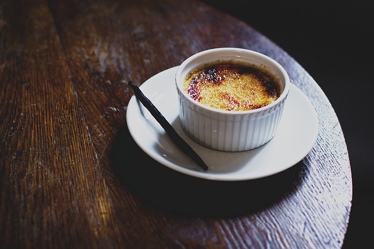
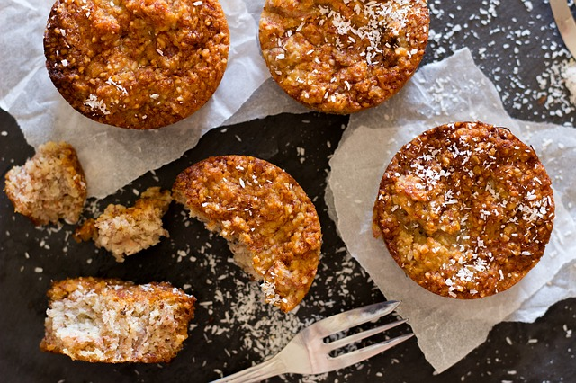
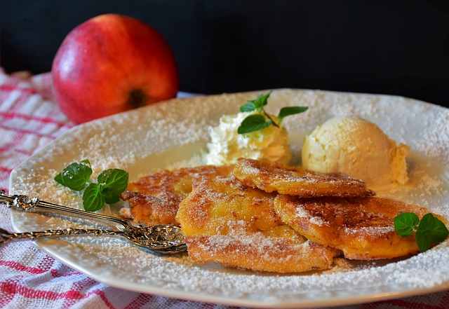

JERICALLAS |
Ingredientes
- 1 litro de leche. (1 taza de leche evaporada y el resto de leche completa)
- 5 yemas de huevo.
- 2 cucharaditas de vainilla.
- 2 pedazos de canela
- 1 taza de azúcar.v
|
 |
| Paso a paso |
- Precalienta el horno a 200°C.
- Coloca a calentar agua para posteriormente usarla en baño maría.
- En un bowl aparte bate las yemas hasta que estén bien integradas.
- En una olla honda, pon a temperatura media la leche, la vainilla, la canela y el azúcar.
- Revuelve constantemente para evitar que se pegue el azúcar al fondo.
- Cuando llegue a su punto de ebullición mezcla aproximadamente 8 minutos, debes ir mezclando para evitar que salga la nata de la leche.
- Apaga el fuego, retira la canela y en saca una taza de esta mezcla.
- Esta taza de leche tibia debe unirse con las yemas batidas, sin embargo es importante que se haga poco a poco y sin dejar de batir para evitar que el calor de la leche empiece a cocinar el huevo.
- Una vez que se hayan integrado la taza de leche y las yemas, se agrega esta mezcla al resto de la leche tibia teniendo el mismo cuidado del paso anterior.
- Vierte esta mezcla en moldes para Jericallas (preferiblemente de cerámica) y coloca esos pequeños moldes dentro de un refractario grande.
- Coloca con mucho cuidado el agua caliente dentro del refractario grande para crearle un baño maría a las Jericallas.
- Mételo al horno y baja la temperatura del mismo a 180°C, por aproximadamente 45 minutos o hasta que esté dorado encima.
- Al sacarlas del horno debes dejarlas enfriar y luego guardarlas en el refrigerador.
|
|
Inicio
|
CAPIROTADAS |
Ingredientes
- 1 1/4 taza de piloncillo
- 1 1/2 taza de agua
- 1 varita de canela
- 2 clavos de olor
- 1/4 de taza de pasitas
- 3 cucharadas soperas de mantequilla derretida
- 3/4 de taza de queso Cotija
- 3 cucharadas de aceite vegetal
- 16 rebanadas de pan bolillo de 1/3 de pulgada por lo menos de dos días antes
- 1/4 de taza de cacahuates
- 2 cucharadas soperas de mantequilla en cubos
|
 |
| Paso a paso |
- Precalienta el horno a 350oF (180oC).
- En una olla mediana calienta el piloncillo, la canela, los clavos de olor y el agua a temperatura media para que se derrita el piloncillo hasta formar un jarabe.
- Mezcla la mantequilla —previamente derretida— con el aceite y barniza con esta mezcla las rebanadas de pan. Coloca las rebanadas de pan en una charola y mételas al horno durante 8 minutos. Después voltea las rebanadas de pan para que tengan un dorado parejo y déjalas aprox. 5 minutos más hasta que estén de un color dorado ligero.
- Ahora sigue el proceso de ensamblar la capirotada: Empieza a colocar las rebanadas de pan en la base de un molde para hornear y cubre cada una de éstas con el jarabe de piloncillo. (Asegúrate que cada rebanada quede bien empapada de este jarabe). Si prefieres remoja el pan en el jarabe primero y luego lo colocas en el molde.
- Cubre esta primera capa de pan con queso, pasitas, cacahuates y cualquier otra fruta o nueces que hayas decidido agregar.
- Coloca otra capa de pan y continúa con el mismo proceso que en el paso anterior.
- Cuando hayas terminado con todas las capas, vacíales el resto del jarabe; cúbrelas con queso, pasitas y cacahuates, y coloca los cubitos de mantequilla encima. Cubre el molde con papel aluminio y hornea por 45 minutos aprox. hasta que todas las capas de pan estén humedecidas y se haya formado una capa dorada.
- La capirotada se sirve caliente o fría, según el gusto.
|
|
Inicio
|
BUÑUELOS |
Ingredientes
- 2 tazas de harina para todo uso
- 1 cucharadita de polvo para hornear
- 1 cucharada de azúcar
- 1/2 cucharadita de sal
- 1 huevo
- 1 cucharada de mantequilla ya derretida y a temperatura ambiente
- Aprox. 3/4 de taza de agua tibia* Ver nota
- 1 cucharadita de esencia de vainilla
- Aprox. 2 tazas de aceite vegetal para freír los buñuelos
- Azúcar para espolvorear
|
 |
| Paso a paso |
- En un tazón grande mezcla la harina, el polvo de hornear, 1 cucharada de azúcar y 1/2 cucharadita de sal.
- Forma un hueco en el centro y agrega el huevo, la mantequilla derretida y la vainilla. Revuelve hasta que la mezcla dé la apariencia de pedacitos de avena. Agrega el agua poco a poco (una cucharada a la vez) y amasa (por lo general menos de 5 minutos) hasta obtener una mezcla suave y lisa. Cubre la masa con un paño o servilleta de cocina y deja reposar durante 30 minutos.
- Mientras la masa está en reposo prepara tu área de trabajo con un rodillo, un plato grande con una toalla de papel o bolsas de papel abiertas, harina extra para estirar las bolitas de masa, y una sartén grande con el aceite vegetal listo para el momento de empezar a freír los buñuelos.
- Divide la masa en 12 bolitas y cúbrelas con una servilleta de cocina.
- Calienta 3/4 de pulgada de aceite en el sartén grande.
- Coloca una de las bolitas de masa en tu superficie de trabajo previamente enharinada y estírala con el rodillo. Aplana cada bolita hasta formar un círculo lo más delgado posible pero sin que se rompa.
- Para darle ese estirón extra al buñuelo colócalo sobre una cazuela (o un tazón) invertida y cubierta con una servilleta de manta; y estira el buñuelo por los bordes con mucha delicadeza. (El buñuelo debe quedar delgado, casi transparente).
- Puedes formar los buñuelos, y ponerlos sobre una mesa cubierta con un mantel limpio. Que no se peguen unos con otros, mientras terminas de formarlos todos. De esta manera, se seca un poco la masa, y quedan bien doraditos.
- Fríe los buñuelos en aceite muy caliente hasta que estén dorados y crujientes. (Este paso tardará sólo unos segundos). Coloca los buñuelos en un plato cubierto con toallas de papel para absorber el exceso de aceite. Sírvelos calientes o a temperatura ambiente y espolvoréalos con azúcar. Si no deseas rociar el azúcar de inmediato puedes conservar los buñuelos en forma perfecta y crujiente para otro día, y sólo tendrás que añadir el azúcar al momento de servir. Si prefieres servirlos calientes al día siguiente, colócalos en el horno a temperatura muy baja durante 5 minutos. Ahora, lo único que necesitarás es un poco de chocolate caliente para acompañarlos.
|